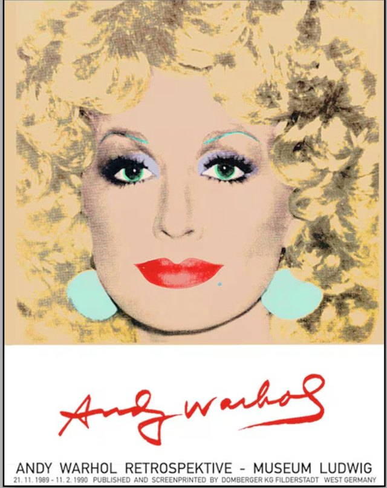

Lesson 1. An icon in colour: Warhol's Dolly
Debatable question: Does a portrait show a person, or the image the public wants?
By the end of this lesson, I can: describe a portrait, say what a person looks like and give my impression, compare two images.

Andy Warhol, Dolly Parton, 1985. Poster of the Andy Warhol retrospective, Museum Ludwig, Cologne, 1989-1990. © The Andy Warhol Foundation for the Visual Arts. Protected work, reproduced as a one-off teaching exception.
For the teacher: timing (52 minutes)
| Step | Time | Activity | Interaction |
|---|---|---|---|
| 1 | 0-6 | Diagnostic assessment, part A (written, individual) | individual |
| 2 | 6-10 | Diagnostic assessment, part B (30 seconds each, in pairs, teacher circulates) | pairs |
| 3 | 10-14 | The question of the day: first impressions of the poster | whole class |
| 4 | 14-21 | Expanding your vocabulary + flashcards | pairs |
| 5 | 21-28 | The teacher’s point: present simple, present continuous, look, comparatives | whole class |
| 6 | 28-36 | Exercises 1 to 5 | individual then pairs |
| 7 | 36-46 | Speaking task: “The guided tour” (every student speaks) | groups of 4 |
| 8 | 46-50 | Written record | individual |
| 9 | 50-52 | Homework | whole class |
Stop point (minute 46). If you reach minute 46, the essential is done: every student has described the poster aloud. The written record can be copied from the board.
Emergency exit (8 minutes, if you are late or the projector fails). Skip exercises 4 and 5. Each student says three sentences about the poster (one present simple, one present continuous, one with looks like) to their neighbour, then the class votes for the most precise description. Written record dictated in two minutes.
Step 1-2. Diagnostic assessment (see the student sheet at the end of this lesson)
Teacher’s note. This is not marked. It shows you who needs the Help boxes and who can go further. Collect the sheets and listen to the pairs during part B.
Step 3. The question of the day
Show the poster without saying who it is. Ask:
- Who do you think this is? A singer, an actress, a doll?
- Is this a photo or a painting? How do you know?
- Would you like a portrait of yourself like this? Why or why not?
Then give the information: it is Dolly Parton, an American country singer, painted by Andy Warhol in 1985. Warhol (1928-1987) made famous portraits of stars such as Marilyn Monroe. He used silkscreen printing so that the same face could be repeated like a product.
Transition. To answer the question of the day (person or public image?), we first need precise words to describe what we see.
Step 4. Expanding your vocabulary
A. Words for the portrait (theme vocabulary)
| Word | Meaning | Example in context |
|---|---|---|
| a portrait | a picture of a person | This is a portrait of Dolly Parton. |
| pop art | an art movement (1950s-1970s and after) using bright colours and images from popular culture | Andy Warhol was a pop art painter. |
| a silkscreen | a printing method that pushes ink through a fine screen | Warhol used silkscreens to repeat images. |
| platinum blonde | a very light, silvery blonde | Her curls are platinum blonde. |
| curls | round locks of hair | She has big curls. |
| turquoise | blue-green | She wears big turquoise earrings. |
| lilac | light purple | Her eyeshadow is lilac. |
| scarlet | bright red | Her lips are scarlet. |
| pale peach | a very light orange-pink | The background is pale peach. |
| the background / the foreground | the part behind / in front | Her face is in the foreground. |
| an icon | a famous person who represents an idea or a time | Dolly became an American icon. |
| striking | very easy to notice, impressive | The red lips are the most striking detail. |
B. Words to analyse and give an opinion
| Function | Words |
|---|---|
| Describe the place in the picture | in the foreground, in the background, in the middle, on the left / right, at the top / bottom |
| Give an impression | She looks + adjective · She looks like + noun · She seems + adjective · It gives the impression that... |
| Give an opinion | I think that... · In my opinion,... · To me,... · I find it + adjective |
| Nuance | rather, quite, a bit, almost, not really |
| Contrast | but, whereas, while, however |
Exercises on vocabulary
Exercise A1. Match the detail and the colour.
1. her hair · 2. her eyes · 3. her eyeshadow · 4. her lips · 5. her earrings · 6. the background
a. lilac · b. scarlet · c. turquoise · d. platinum blonde · e. pale peach · f. green
Answer key
Answer key: 1d, 2f, 3a, 4b, 5c, 6e.
Exercise A2. Fill in the gaps with: icon · striking · background · foreground · pop art
Warhol was a (1) __ painter. In this portrait, Dolly’s face is in the (2) _ and the (3) is pale peach. The most (4) detail is her red mouth. With this portrait, she became an (5) ___.
Answer key
Answer key: 1 pop art · 2 foreground · 3 background · 4 striking · 5 icon.
Exercise A3. Reformulate with a nuance word (rather, quite, a bit, almost).
1. The colours are very bright. → (a bit too)
2. Her hair fills the picture. → (almost)
3. She looks artificial. → (rather)
Answer key
Answer key: 1. The colours are a bit too bright. 2. Her hair almost fills the picture. 3. She looks rather artificial.
Flashcards of the lesson
Make at least six cards: four blue (theme), one green (opinion), one red (grammar).
| Front | Back |
|---|---|
| striking (blue) | very easy to notice · The red lips are the most striking detail. · STRI-king |
| She looks like + noun (red) | elle ressemble à · She looks like a film star. · no “like” before an adjective |
| whereas (green) | alors que · The photo is realistic, whereas the portrait is artificial. · where-AS |
Step 5. The teacher’s point
Teacher script. Show the poster. Ask: What do you see? Write two columns on the board: “always true in the picture” / “happening now in the picture”. Students give examples, then add look and look like. Finish with a comparison between the poster and an official photo of Dolly (teacher’s choice, from an official website).
| Point | Form | Examples |
|---|---|---|
| Present simple: facts, features | subject + verb (+ s with he/she/it) | She has green eyes. She wears big earrings. |
| Present continuous: what is happening in the picture | be + verb-ing | She is smiling. She is looking at us. |
| State verbs | have (a feature), be, like, know: not in the continuous | ✗ She is having green eyes. ✓ She has green eyes. |
| look + adjective | She looks happy. | |
| look like + noun | She looks like a film star. | |
| Comparatives | short: bright → brighter than; long: colourful → more colourful than; irregular: good → better, bad → worse | Her hair is brighter than in real life. |
| Superlatives | the brightest, the most striking | The lips are the most striking detail. |
Quick check. Correct: She is having green eyes.
Answer key
Answer key: She has green eyes.
Step 6. Exercises
Exercise 1. look or look like?
1. She ... happy. 2. She ... a film star. 3. The colours ... very bright. 4. The earrings ... two big sweets. 5. The portrait ... a poster from the 1980s.
Answer key
Answer key: 1 looks · 2 looks like · 3 look · 4 look like · 5 looks like.
Exercise 2. Present simple or present continuous?
1. Dolly (smile) ... in the portrait. 2. She (have) ... big curly hair. 3. She (look) ... straight at us. 4. Warhol (use) ... bright colours in his portraits. 5. The background (be) ... pale peach.
Answer key
Answer key: 1 is smiling · 2 has · 3 is looking · 4 uses · 5 is.
Exercise 3. Compare the poster and an official photo.
1. In the portrait, her hair is (bright) ... than in the photo. 2. The colours are (artificial) ... 3. The photo is (realistic) ... 4. The red lips are the (striking) ... detail.
Answer key
Answer key: 1 brighter · 2 more artificial than in the photo · 3 more realistic than the portrait · 4 most striking.
Exercise 4. Transform into the present continuous when possible. If it is impossible, explain why.
1. She smiles. 2. She has turquoise earrings. 3. She looks at the camera. 4. She knows the painter.
Answer key
Answer key: 1 She is smiling. 2 Impossible: have for a feature is a state verb. 3 She is looking at the camera. 4 Impossible: know is a state verb.
Exercise 5. Short production. Write six sentences: two in the present simple, two in the present continuous, one with looks or looks like, one comparative.
Model answer: Dolly has big platinum curls. She wears turquoise earrings. She is smiling. She is looking straight at us. She looks like a film star. The colours are brighter than in real life.
Help box. Use this frame: In the foreground, I can see... She has... She is... She looks like... The colours are ...-er than...
Going further. Use seem to be + -ing: She seems to be enjoying the moment. Use far / much + comparative: The portrait is far more colourful than a photo.
Step 7. Speaking task: “The guided tour”
Groups of four. Each student is a museum guide for 45 seconds and presents the poster to the group.
- Student A: what you see (foreground, background, colours).
- Student B: what she is doing and what she looks like.
- Student C: comparison with a photo.
- Student D: answer the question of the day: Does the portrait show the person or the public image? Start with In my opinion,... and use whereas.
Then the groups swap roles once if time allows. The listeners tick on a card each word of the lesson they hear.
Possible answer for student D: In my opinion, the portrait shows the public image, whereas a photo shows the person. The colours are far brighter than in real life, so she looks like a doll or a product. Warhol shows a star, not the private woman.
Step 8. Written record
Lesson 1. An icon in colour
Warhol’s Dolly Parton (1985) is a pop art portrait. In the foreground, Dolly has big platinum curls, green eyes, lilac eyeshadow and scarlet lips. She is smiling and looking at us. She looks like a film star.
Grammar. Present simple = what is always true (she has); present continuous = what is happening in the picture (she is smiling). look + adjective / look like + noun. Comparatives: brighter than, more colourful than.
My answer to the question: The portrait shows ... rather than ..., because ...
Step 9. Homework
- Make six flashcards (four blue, one green, one red). Revise them with the 3-box method.
- Describe a famous person in five sentences without saying the name (one with looks like, one comparative). Next lesson, the class will guess.
- Help box: record yourself (one minute) reading your five sentences.
Diagnostic assessment (Lesson 1)
Student sheet
Name: __ Class: _ Date: ___
Part A. Writing (6 minutes)
1. Name three American states.
2. What kind of music comes from Nashville, Tennessee?
3. Write three sentences about a singer you like: who he or she is, what he or she looks like, why you like him or her.
4. Look at the poster. Write three sentences: what you see, what colours, your impression.
Part B. Speaking (30 seconds each, in pairs)
Describe the poster to your partner. Then your partner describes it to you.
Teacher’s marking grid (not marked: positioning)
| Criterion | Not yet (A1) | Nearly (A2) | Reached (B1) |
|---|---|---|---|
| Cultural knowledge (Q1-2) | no answer | one correct answer | states + country music |
| Description (Q4, part B) | isolated words | simple sentences (she has, it is) | organised description with foreground / background |
| Opinion | none | I like / I don’t like | opinion with a reason (because...) |
| Language: vocabulary reused | fewer than 3 precise words | 3 to 5 words | 6 words or more (colours, hair, portrait) |
| Language: correct syntax | word order often wrong | mostly correct, errors with -s or be | present simple and continuous correct |
What to do with the results. Students with two or more “Not yet”: Help boxes from Lesson 2 onwards. Students with four “Reached”: Going further boxes.
Student self-correction grid
| Criterion | What I did | What I missed (using the teacher’s grid) | My improved version |
|---|---|---|---|
| Cultural knowledge | |||
| Description | |||
| Opinion | |||
| Language: vocabulary | |||
| Language: syntax |
Model of an improved version (part A, Q4): In the foreground, Dolly has platinum blonde curls and scarlet lips. The background is pale peach. She is smiling and she looks like a film star, because the colours are brighter than in real life.